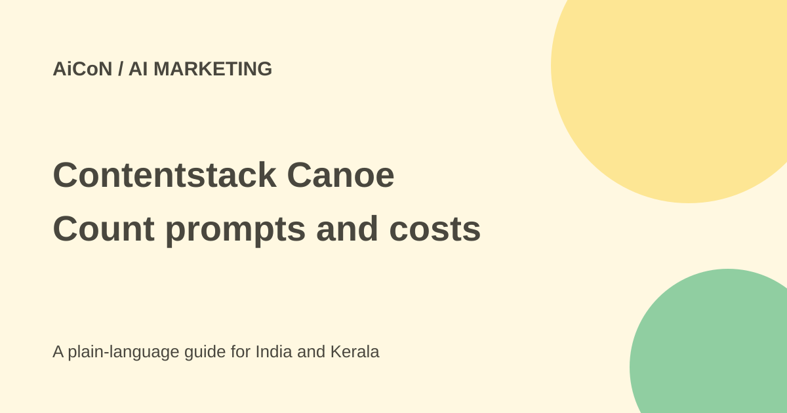

Contentstack Canoe: free report limits and Growth cost
Canoe from Contentstack checks how AI engines describe a brand and which sources they cite. Its free plan covers one brand and 20 prompts a month. A sampled AI report is not a count of real customer conversations or sales.

What does a report show?
The site describes buyer-style questions, brand mentions, competing brands, cited sources and a site-readiness audit. It suggests fixes for how your website is understood by AI search tools.
A brand can be mentioned without being recommended. Results can change with prompts, model versions and dates. Use the report to investigate a specific sample, not to claim that every user sees the same answer.
The free allowance
The current plan docs give Free one brand, up to ten generated questions, ChatGPT and Gemini, and monthly or on-demand runs. One question sent to one engine is one prompt.
A full ten-question run across two engines uses all 20 monthly prompts. An extra on-demand run cannot start if it would exceed the allowance. Free has no card requirement or expiry according to the docs, but paid engine and API features are separate.
How to try one public brand
- Open the official Canoe site and read current plan limits and privacy terms.
- Use a business website you are authorised to assess, not private client data.
- Review the generated questions against the actual buyers, region and language.
- Check the number of engines and prompts before starting the report.
- Inspect cited sources and sample answers, not only the headline score.
- Compare a few known facts about the business and identify incorrect AI statements.
- Make a limited website correction, then plan a later comparable run within the allowance.
- Review usefulness before paying for more engines or frequent monitoring.
Growth launch price
The checked docs list Growth at US$279 a month, about ₹26,905, or US$2,790 a year, about ₹269,050 paid annually. Approximate conversions use ₹96.43/USD before fees and taxes. These are limited-time launch prices and may change.
Growth includes 2,000 prompts monthly, five brands, four listed engines and up to 100 questions per monitor. At 100 questions across four engines, one run uses 400 prompts, so the monthly allowance covers five such runs across the workspace.
The docs say partial engine failures can still be charged, while outright failed runs do not use prompts. Annual-plan exit requires contacting the service. Check final billing and current cancellation terms before buying.
For a Kerala business
Check whether the questions represent local customers, Malayalam needs and Indian availability. A favourable international English answer may not reflect local buying decisions.
Do not promise sales or guaranteed AI recommendations based on a visibility score. Website changes should improve truthful information for people, rather than add false claims to chase a model.
What changed since the original post?
We added verified Growth launch prices and prompt arithmetic. Monthly plus on-demand scheduling does not mean unlimited free reports. We did not create an account or run a brand audit.
Frequently asked questions
Can Free use all four engines?
No. Current docs list ChatGPT and Gemini only for Free.
What uses one prompt?
One question sent to one engine.
Does a high score guarantee sales?
No. It describes sampled AI responses, not observed purchases.
Sources: Canoe site · Current plans and limits · Approximate exchange-rate source. Checked 7 October 2026.